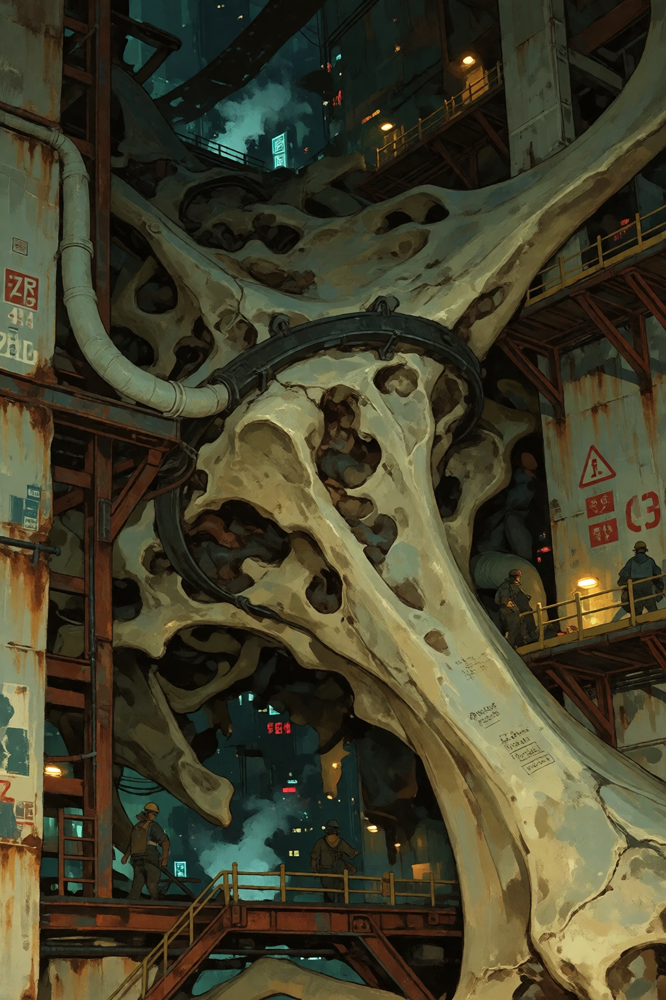
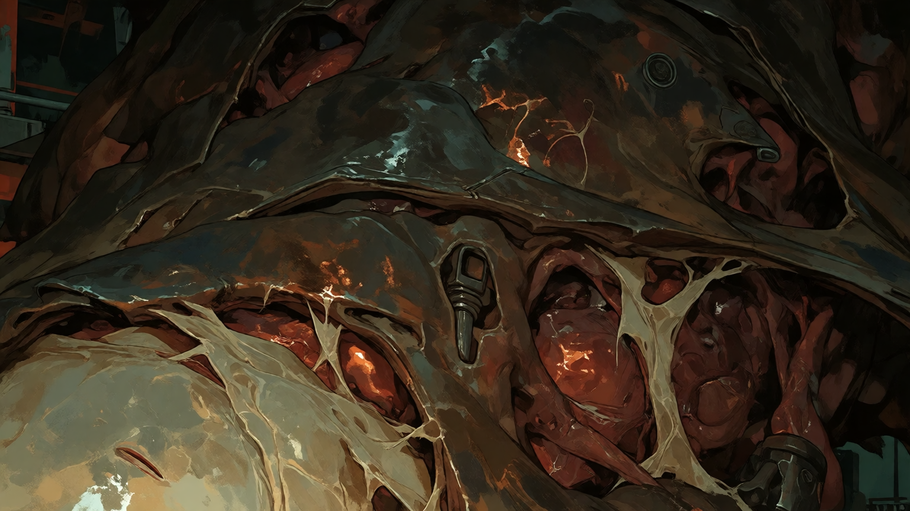
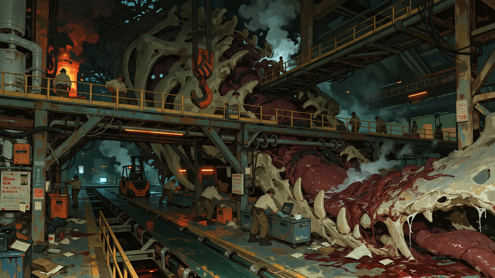
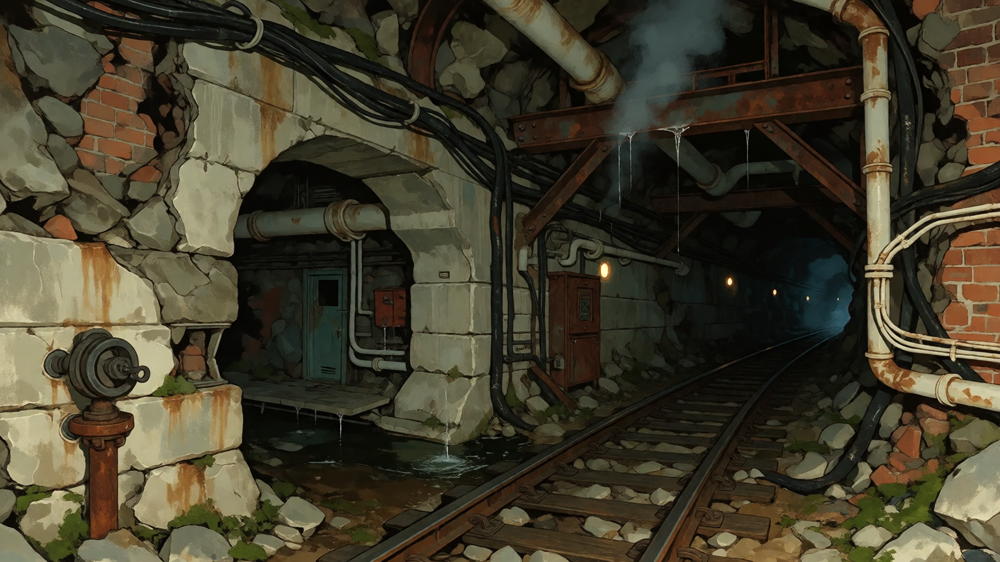
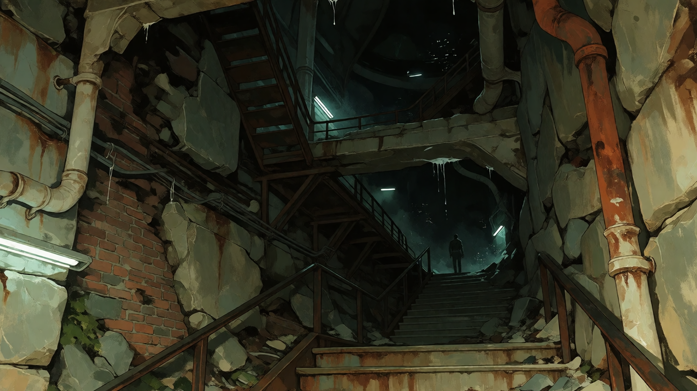
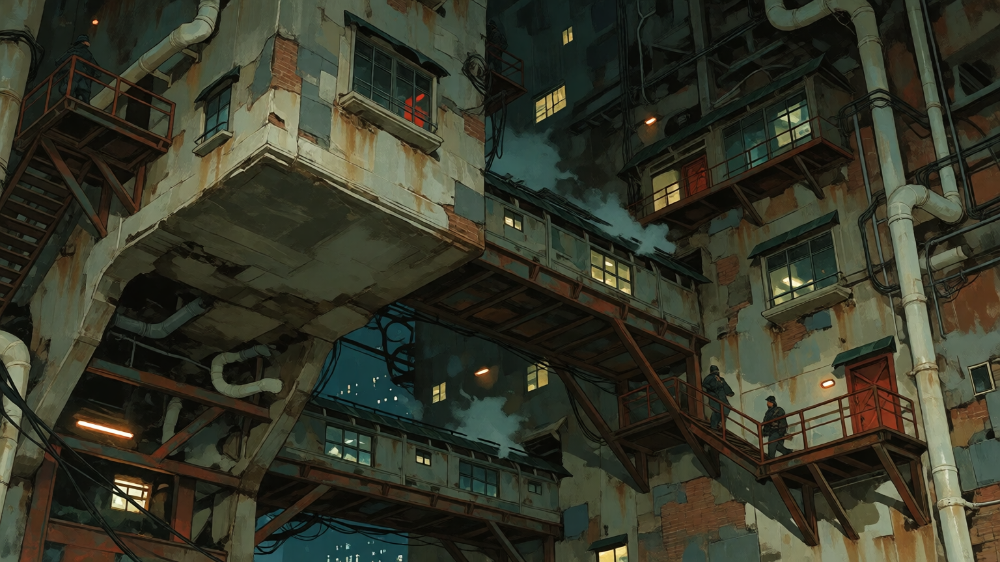
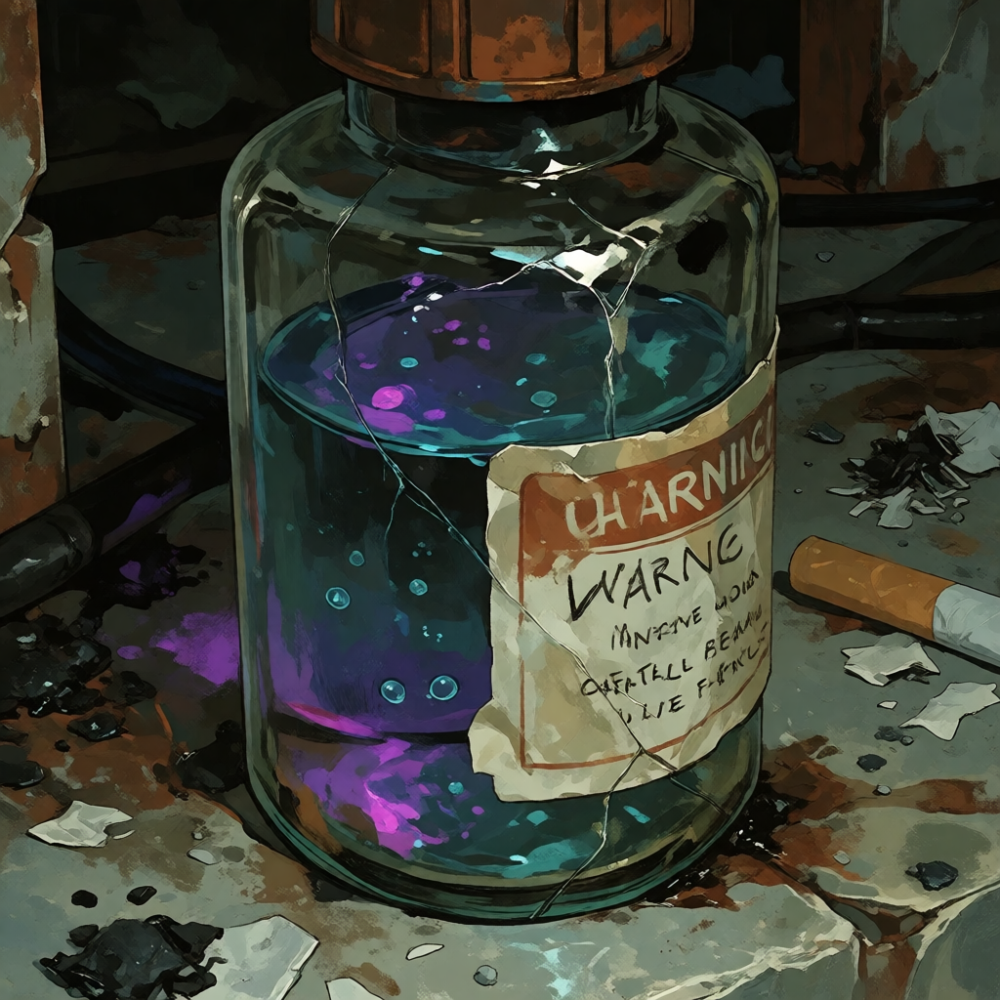
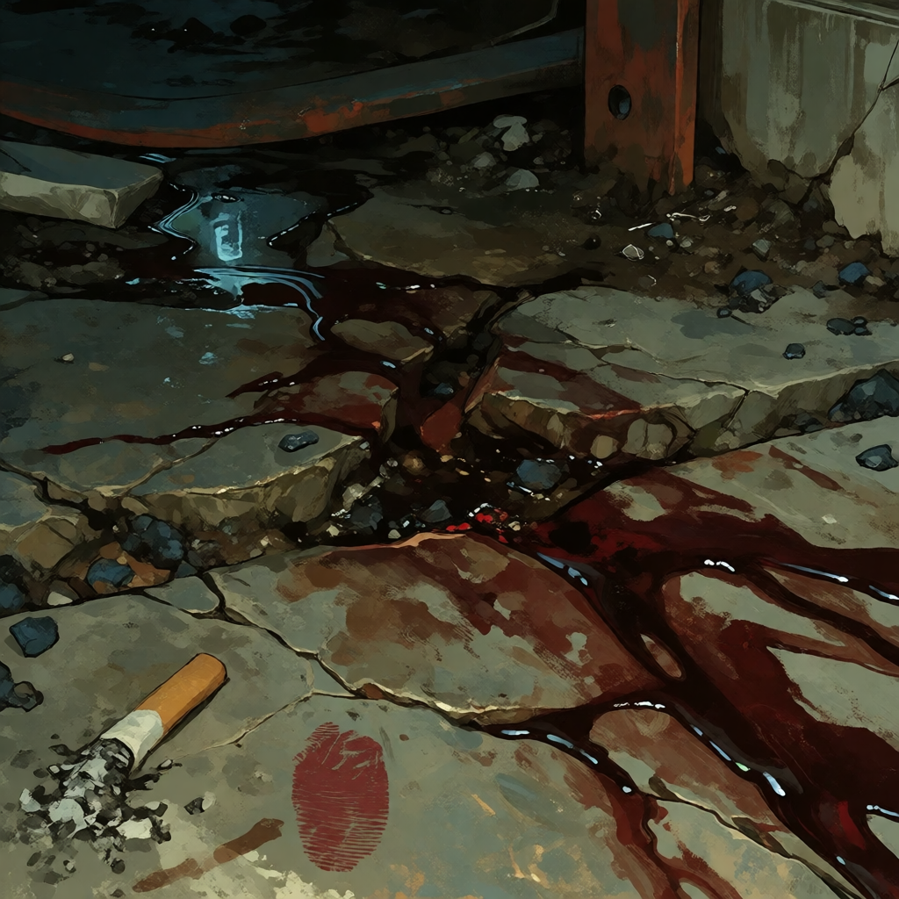
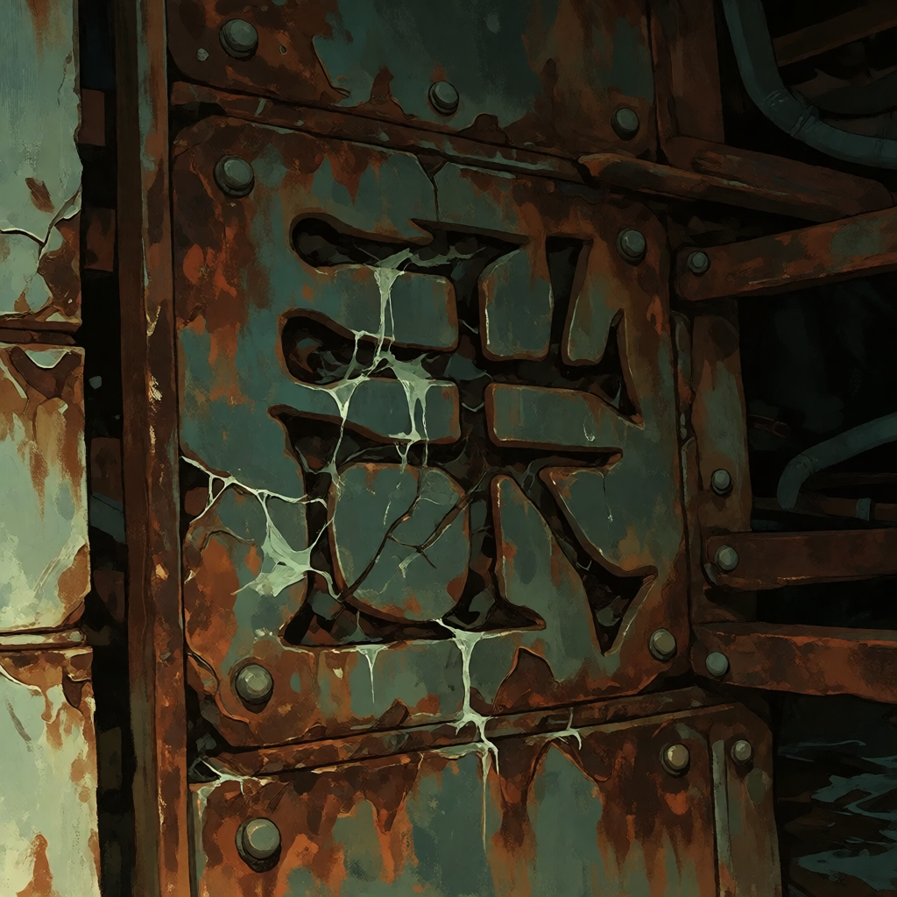

THE CITY
GETS
PROCESSED.
Nine is where Saint Jude's Landing turns impossible biological material into useful shit.
Factories. Processing plants. Warehouses. Foundries. Chemical facilities. Transport systems. Worker housing. Machinery big enough to make a person look temporary.
Behemoth bone becomes structure. Hide becomes material. Teeth become tools. Blood becomes chemicals. Glands become things nobody wants to ask too many questions about.
EVERYTHING GOT COMPLICATED
Nine is not a factory district built from scratch.
It is what happens when nearly two thousand years of construction, industry, repairs, disasters, expansion, abandonment, and increasingly questionable engineering decisions are stacked on top of one another.
Ancient foundations sit underneath processing floors. Old roads became loading routes. Buildings were expanded into other buildings. Machines were replaced, repaired, cannibalized, rebuilt, and occasionally left exactly where they stopped working.
At some point, the difference between building, machine, and carcass stopped being especially useful.



INDUSTRY
Somebody has to make all this shit useful.
Behemoths are biologically inconsistent, physically impossible creatures. That does not stop people from figuring out what parts can be sold.
Nine handles the ugly middle section between “giant impossible corpse” and “commercial product.”
- BONE / structural materials
- HIDE / manufactured goods
- TEETH / tools and components
- BLOOD / chemicals and industrial compounds
- GLANDS / pharmaceuticals, recreational products, chemicals
- ORGANS / research and specialty processing
- CLAWS / cutting and industrial applications
- UNIDENTIFIED / somebody will figure it out eventually

EMPLOYEES ARE EXPECTED TO REPORT ALL UNIDENTIFIED BIOLOGICAL MOVEMENT.

PEOPLE LIVE HERE.

Nine is not an industrial wasteland.
It is a neighborhood.
People work shifts. Children grow up around factory noise. Families rent apartments. Somebody always knows somebody who can repair a machine. Somebody's grandmother has lived in the same building for sixty years.
There are cheap restaurants, corner stores, apartments, schools, laundromats, bars, bus routes, worker unions, little businesses and all the other boring infrastructure required to keep several thousand people from starving.
“You get used to the smell.”— unidentified Nine resident, municipal interview

NINE
DOESN'T
SLEEP.
Night shift starts. Day shift ends. Trucks keep moving.
Factory windows stay lit. Processing equipment keeps running. Worker housing glows between enormous structures.
Somewhere below the street, something is probably still moving.
THE YARD

The first step is getting the fucking thing apart.
Behemoths can be enormous. Some are too large to transport whole. Others cannot be safely moved at all.
So Nine dismantles them where they are found, where they wash ashore, where they collapse, or wherever somebody with enough money and enough equipment decides the carcass is worth retrieving.
Cranes become temporary skeletons. Workers climb across ribs. Entire sections of industrial infrastructure are built around remains that were never supposed to become buildings.
This complicates transportation considerably.

YOU KNOW
THE SKULL.
Everyone does.
The exact history is disputed, because of course it is.
The skull has been incorporated into the industrial landscape for so long that nobody agrees what was there first.
DO NOT CLIMB IT.
This advice has been ignored repeatedly.
WHERE DOES
THE MACHINE
END?
Nobody knows anymore.
Some Nine infrastructure has been repaired so many times that its original purpose is unclear. Some machinery has been constructed directly into Behemoth remains.
Sometimes the organic material grows around the machinery.
Sometimes the machinery grows into it.

BELOW
Nine gets worse underground.
Ancient foundations. Drainage systems. Utility tunnels. Abandoned service corridors. Old factory infrastructure. Buried roads.
Some tunnels are maintained. Some are forgotten. Some are used by workers as shortcuts.
Some should probably have been sealed.






SOMETHING
LIVES IN
THE PIPES.
This is not particularly unusual.
Nine has creatures adapted to machinery, heat, chemical runoff, darkness, waste systems, and whatever the fuck is happening in the lower infrastructure.
Most workers develop rules.
- Do not put your hand into a pipe you cannot see through.
- Do not follow clicking sounds.
- Do not feed anything with more than six legs.
- If the pipe starts breathing, leave.

BENOIT
GATOR DEMI-HUMAN / NINE ORIGIN
Huge. Olive-brown. Broad enough to make doorways feel personally inadequate.
Benoit knows Nine as infrastructure rather than scenery. He knows which routes are faster, which buildings are unsafe, which machinery is supposed to make that sound, and which workers will let him borrow equipment without asking too many questions.
He is calm, practical, protective, and generally much more interested in solving a problem than discussing how fucked up the problem is.
 HEAVY-LIDDED / GOLDEN / VERTICAL PUPILS
HEAVY-LIDDED / GOLDEN / VERTICAL PUPILS
ARCHIVE MATERIAL


Industrial compounds derived from Behemoth materials are common throughout Nine.

Bone is used in construction, tools, machinery, and manufactured goods.

Large enough to be structural. Sharp enough to make that a bad idea.

THEY USE IT
FOR EVERYTHING.
This is one of the stranger things about Nine.
Eventually, the impossible becomes material.
Somebody drills it. Cuts it. Bolts it down. Sells it. Repairs it. Paints over it. Builds a machine out of it.
After enough time, nobody remembers to be impressed.

BLOOD / CONCRETE
METAL / MARKING LOCAL RECORD
LOCAL RECORD
 FOUND OBJECT
FOUND OBJECT
THE FACTORY
KEEPS RUNNING.
People still have shifts tomorrow.
Somebody has to keep the lights on.